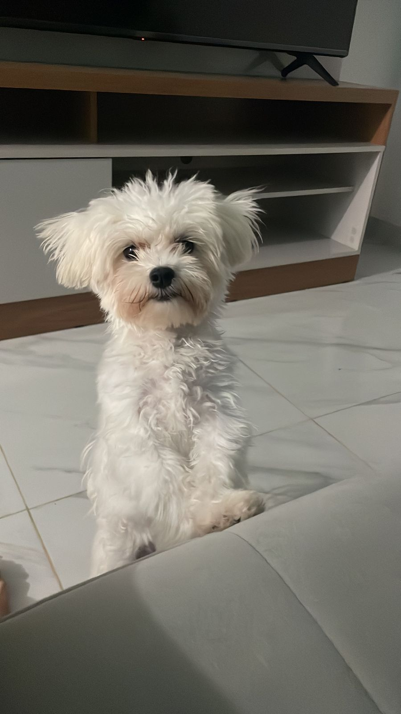

<header class="py-1 bg-image-full" style="background-color:rgb(255, 255, 255)">
    <div class="text-center my-1">

        <link rel="stylesheet" href="adccat.css">
      
<h1 class="titulo1">Cat Adoption</h1>


</header><br>


<!-- Imagens dos dogs -->

<div class="card">
    
    <div>
        <h2>Bob (4 meses)</h2>
        <h3> Porte pequeno e pelagem felpuda. Olhos expressivos e personalidade dócil. 
            Mistura de raças, com uma aparência encantadora. Adora receber carinho e é muito brincalhona. 
            Pronta para trazer alegria e amor a um lar acolhedor. </h3>

        
    </div>
</div>
<!-- --------------------------------------- -->
<div class="card1">
    
    <div>
        <h2 class="t1">Mel (5 anos)</h2>
        <h3 class="t2">Porte médio e pelagem macia. Olhos tristes, mas expressivos. 
            Personalidade dócil e gentil, apesar da tristeza. História de vida difícil, mas ainda confia nas pessoas. 
            Precisa de um lar amoroso e paciente para ajudá-la a superar seu passado.</h3>
    </div>
</div>
<!-- ------------------------------------------------ -->
<div class="card2">
    
    <div>
        <h2 class="t3">Presunta (12 anos)</h2>
        <h3 class="t4">  Uma cadela de idade avançada que procura por um lugar para curtir a aposentadoria. 
            Mesmo na melhor idade, possui muita energia e disposição, adora passear nos fins de tarde.</h3>
    </div>
</div>

<!-- ------------------------------------------------------------- -->

<div class="card3">
    
    <div>
        <h2 class="t5">Max (2 anos)</h2>
        <h3 class="t6"> Porte médio e pelagem sedosa.
            Olhos castanhos doces e personalidade gentil.
            Mistura de raças, aparência única.
            Adora brincar e é extremamente afetuoso.
            Pronto para se tornar um companheiro leal em um lar amoroso.</h3>
    </div>
</div>

<!-- ------------------------------------------------------------------------ -->

<div class="card4">
    
    <div>
        <h2 class="t7">Tinoca (3 ano)</h2>
        <h3 class="t8"> Porte médio e pelagem densa. Olhos doce e olhar amável.  
            Adora atividades ao ar livre e é muito energético. 
            Pronto para ser um protetor leal e companheiro leal em um lar ativo.</h3>
    </div>
</div>

<!-- -------------------------------------------------------------------------------- -->

<div class="card5">
    
    <div>
        <h2 class="t9">Bagulho (6 anos)</h2>
        <h3 class="t10"> Apesar de esquisito é um amor de criatura. 
            Ainda não foi adotado devido sua aparência exótica. 
            Não recomendamos para tutores que possuam crianças, elas costumam ter medo dele.</h3>
    </div>
</div>

<!-- ---------------------------------------------------------------------------------- -->

<div class="card6">
    
    <div>
        <h2 class="t11"> Nico (9 meses)</h2>
        <h3 class="t12">Mistura encantadora de Shih Tzu.
            Personalidade doce e inteligente.
            Companheira leal que adora atividades ao ar livre.</h3>
    </div>
</div>

<!-- ---------------------------------------------------------------------------------------------- -->

<div class="card7">
    
    <div>
        <h2 class="t13"> Faísca (1 ano)</h2>
        <h3 class="t14">SRD cheio de energia e amor.
            Pelagem preta brilhante e olhos leais.
            Adora brincar de buscar e caminhar no parque.</h3>
    </div>
</div>

<!-- -------------------------------------------------------------------------------------------------- -->